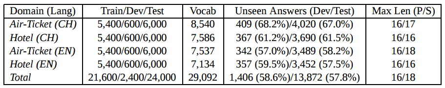
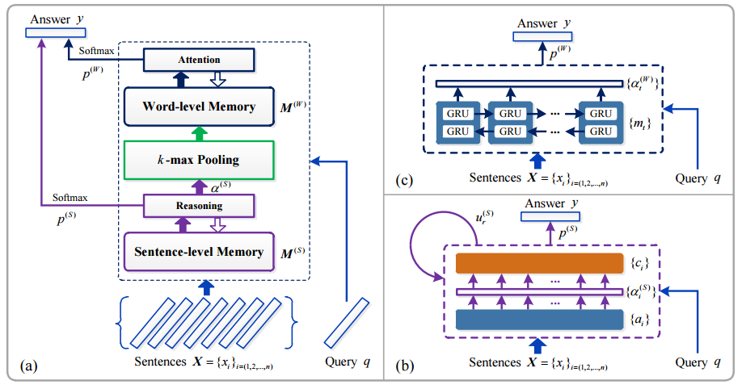
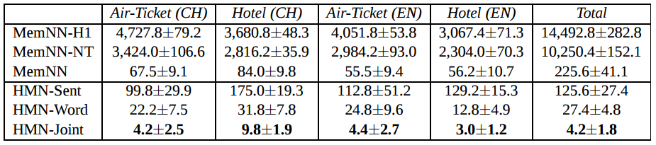
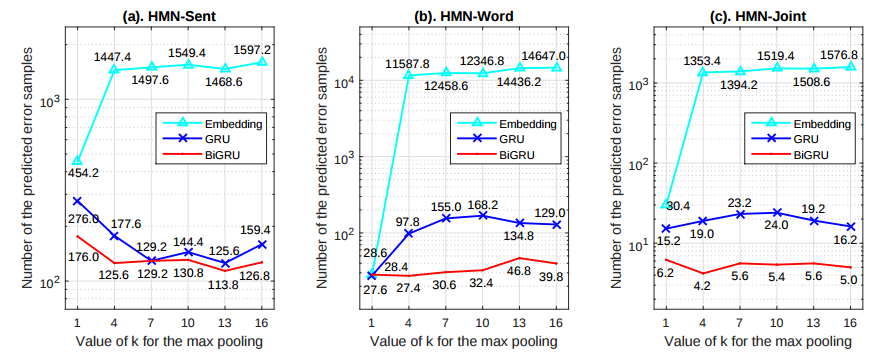
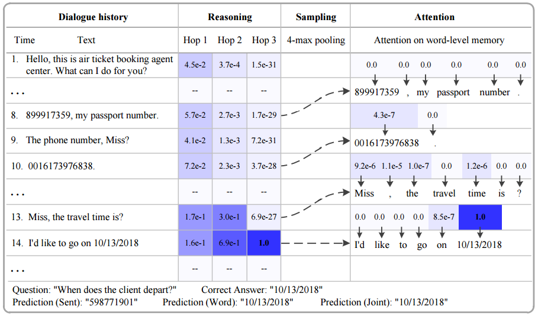

这篇论文是中科院自动化研究所(CASIA)在 9 月份发表的一篇论文，收录于 COLING2016。该论文基于 Memmory Network 做了一些改进，使得模型在特定的 QA 任务中能更好地从 memory 中选择答案，并且能一定程度上处理低频词甚至未登录词(unknown words)。论文的数据集以及模型实现已经在 Github 上开源，如果对论文细节没有太多兴趣，可以直接去 项目地址 了解项目详情。
论文使用的数据集如下表所示

数据集包含机票预订和酒店预订两个领域，而且包含中文的数据集哦，这点很赞，虽然数据量看起来并不是很多。截取中文的机票预订数据中的片段如下:
1 下午 好 ， 我 是 机票 预订 服务 代理 ， 需要 什么 服务 ？ 2 我要 预订 一张 机票 。 3 请问 先生 您 从 哪里 起飞 ？ 4 由 BGI 起飞 的 飞机 。 5 去 到 哪里 ？ 6 到 印第安纳 去 。 7 电话 号 ？ 8 13228762221 ， 这 是 我 的 号码 9 时间 是 ？ 10 2015年09月26日22点 之前 。 11 先生 ， 乘客 的 身份证 是 ？ 12 我 的 身份证号 是 110100195352319154 。 13 麻烦 说 下 您 的 名字 ？ 谢谢 先生 。 14 好 的 ， 名字 是 袁磊 。 15 先生 ， 我们 已经 成功 为 您 预订 。 16 这么 快 ， 非常 感谢您 17 订票 人 的 姓名 叫 什么 ？ 袁磊 16 18 出发 城市 是 哪里 ？ BGI 16 19 到达 城市 是 哪里 ？ 印第安纳 16 20 出发 时间 是 什么 时候 ？ 2015年09月26日22点 16 21 证件号码 是 多少 ？ 110100195352319154 16 22 联系电话 是 多少 ？ 13228762221 16
数据集的情况似乎有点像多轮对话，但并不完全是，如上 22 轮对话，其中前 16 轮是客服和客户之间的对话，这段内容被作为 history 输入到模型中储存为 memory，而 17-22 则是问题和对应的答案，每个问题的答案都是一个单独的词，是从 memory 中挑选出来的。所以从数据集上来看，本文的方法适用于一些像机票预订、酒店预订这种流程比较明确的业务。
像这种数据集，如果要我做我会怎么做呢？粗暴点的思路是将 history 和 question 各自 encode，然后将两者一起用于计算来去预测输出，事实上之前不少 QA 方面的工作都是这种思路。论文开头就批评这种做法
the memory of these methods, such as Long Short-Term Memory(LSTM) (Hochreiter and Schmidhuber, 1997) and Gated Recurrent Unit (GRU) (Cho et al., 2014) compressing all the external sentences into a fixed-length vector, is typically too small to accurately rememberfacts from the past, and may lose important details for response generation
这个也是当前在 sentence representation 讨论得比较多的话题吧，将句子直接 encode 成一个固定长度的向量，是会丢失一些细节的。不过我觉得还是看应用场景，如果是那种一问一答且目的性不是非常强的 QA 场景，encoder-decoder 的框架问题不大，语义漂移(如万能回复)的问题可以在前期进行意图识别、情感分析来得到额外的特征输入到模型里。但像本文的这种数据集就不是简单的一问一答，而是先有了一部分历史信息，然后给定问题从历史信息里寻找答案，有点类似英语的阅读理解题目 —— 因此 PaperWeekly 在 教机器学习阅读 中介绍了《End-to-End Memory Networks》这一篇作为本篇论文基础的论文(好绕口呀)。
对于类似本文的 QA 任务，早先的一些相关工作也是可以用上的，比如 Sukhbaatar 提出的端到端的 Memory Networks，文中记为「MemNN」。但是 MemNN 的问题在于它单纯在句子级别进行 "推理"，具体一点是只使用了 sentence level 的 attention 机制，见之前写的笔记: End-to-End Memory Networks。如果能进一步地在词级别进行分析，结果应该会更好一点。事实上也有人这么做了，2015 年俞扬等人的《Empirical study on deep learningmodels for question answering》论文中就提出了一种 "Search-Response" 结构的模型，先使用 MemNN 从 history 中挑选出相关的句子(supporting sentences)，这一步称为 "Search"；然后用 NTM 或者 NMT(Neural Machine Translation) 来从这些 supporting sentences 中生成答案，这一步称为 "Response"。在 "Search-Response" 结构中，Search 和 Response 两个步骤是分别独立训练的，也就是说这其实是一个 pipeline 的方法。
所以本文的基本思想是: 结合 MemNN 和 "Search-Response" 的思想，得到一个端到端的系统。本文的模型结构如下图所示:

图中左侧是模型的整体结构，右边的两个小图是左图中两个模块的细节图示。整个模型大体上可以划分为四个部分，分别是:
sentence level memory and reasoning
这部分将 history 信息转换成内部的 memory，并在 此基础上计算结果，同 MemNN，上图中右下块是这部分的图示，要注意的是这里为了简化画成了类似 RNN 的结构图，但并不是说 \(X\) 中的句子依次输入这个模型，然后更新自连接的 \(u_{r}{(S)}\)，这里的自连接只是表示多层结构(文中使用的层数为 3)，而这种多层结构和 RNN 的结构有共同之处。
在这里，history 也就是 \(X\) 中的每个句子 \(x_{i}\) 和 question 也就是 \(q\) 都要表示成一个向量，使用的是《End-to-End Memory Networks》中的 position encoding 方法，即将句子中每个词的 embedding 加权求和，而这个权值和词在句子中的次序有关。
总之这部分跟《End-to-End Memory Networks》中的内容基本一样，不赘述，详见 MemNN 的笔记。
k-max pooling
这部分连接 1 和 3，利用 1 输出的 internel state 和 question 一起挑选出 history 中和 question 最相关的 k 个句子。
所谓的 internel state，就是图中的 \(\alpha^{(S)}\)
\[\alpha^{(S)}=softmax(M^{T}u_{1}^{(S)})\]
上式中 \(M\) 为 sentence level memory，\(u_{1}\) 为问题 \(q\) 的 representation。
word level memory and attention: 使用 2 得到的 k 个句子，进行 word level 的 attention 来得到结果
这部分使用 BiGRU 来得到 attention
\[M^{(W)} = \{m_{t}\}_{t=(1,2,...)}\]
\[m_{t}=\overrightarrow{h_{t}}+\overleftarrow{h_{t}}\]
\[\alpha^{(W)}=softmax(v^{T}\tanh(Wu_{R}^{(S)}+U\hat{m}_{t}))\]
这里的 \(alpha^{(W)}\) 就是 word level 得到的结果，但是这个结果是在 k 个句子中的词上的概率分布，没法直接用于第 4 步的计算，因此要做一次转换，将 \(\alpha^{(W)}\) 扩充为长度为 \(V\) 的向量，\(V\) 是词典的大小，方法是用 0 填充。
output: 综合 1 和 3 的输出来计算最后的结果
第一步得到的输出记为 \(p^{(S)}\)，第三步得到的输出记为 \(p^{(W)}\)，将这两者直接相加作为最后的输出
\[p = p^{(S)}+p^{(W)}\]
如上所述，因为在 sentence level memory network 的基础上加上了 word level memory，作者将这个模型称为「Hierarchical Memmory Networks」，这是一个能够进行端到端训练、能在更细粒度的语言成分上进行"推理"的 QA 模型。
下图是 HMN 和其他模型在给定的数据集上的对比结果

以及 HMN 模型使用不同的 word level encoder 时的效果对比

下面的图显示了模型回答一个问题时的过程

以上就是本篇论文的主要内容，至于开头作者提到的未登录词问题的处理，作者就是指着上面的图说：你看， 10/13/2018 这样的词也被找出来了！总之，作者没有提出一种对未登录词的解决办法，我猜他的意思是，在构建 vocabulary 的时候，不要根据词频去除低词频的词，而是照单全收喂给模型，而这个模型是能够将这种词频非常低的词正确地找出来作为答案的。
我觉得这就有点标题党了哈……